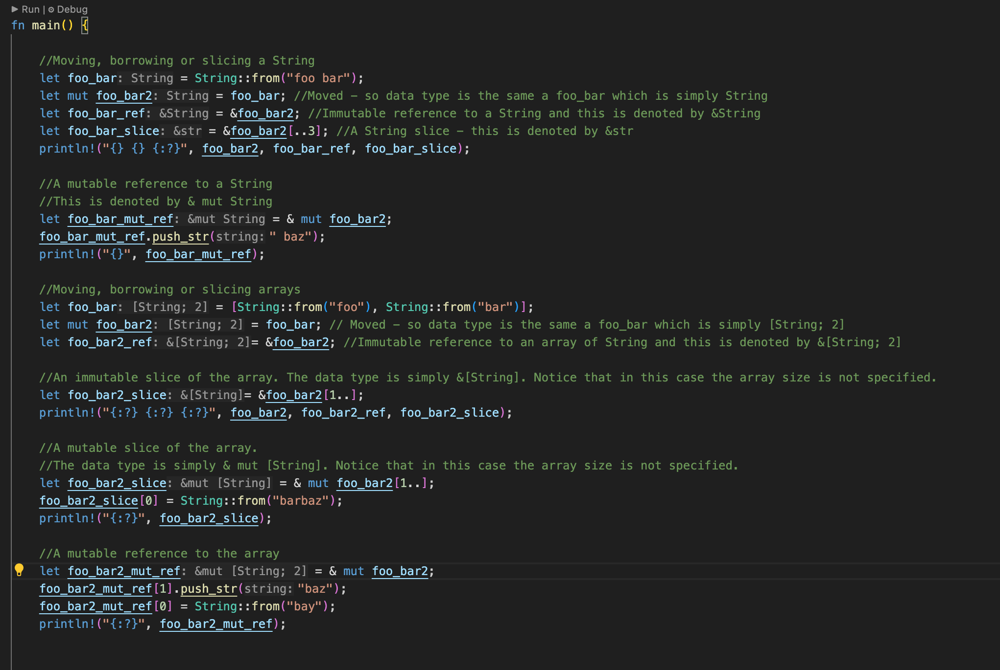

About me
My name is Olu Shiyanbade linkedin. I'm a Software Engineer with 16 years development experience. I have experience with Java and common associated technologies/frameworks such as Spring and SpringBoot. I also have experience with databases, Kubernetes, AWS and Azure. I have recently become interested in Rust. The purpose of this site is to showcase what I learn on my Rust journey. Enjoy!
Standard Input and Output
Writing to standard output
fn main() { println!("Hello World!!!"); }
Reading from standard input
fn main() { let mut line = String::new(); std::io::stdin().read_line(& mut line).expect("cannot read"); let line = line.trim(); println!("You entered {line}"); }
Data types and Variables
Data types
The primitive (i.e. built in) data types in Rust can be sub divided into two namely:
- Scalar types
- Compound types
Scalar types
Scalar types are types that can hold a single value.
- Numeric types: numeric types have a signed and an unsigned version. The numeric types in Rust are:
| Type | Description |
|---|---|
| u8 | Unsigned 8 bit integer |
| i8 | Signed 8 bit integer |
| u16 | Unsigned 16 bit integer |
| i16 | Signed 16 bit integer |
| u32 | Unsigned 32 bit integer |
| i32 | Signed 32 bit integer |
| u64 | Unsigned 64 bit integer |
| i64 | Signed 64 bit integer |
| f32 | 32 bit floating point |
| f64 | 64 bit floating point |
The non signed versions of the numeric types listed above can hold a value between -2 ^ N to (2 ^ N) - 1 while the unsigned versions can hold a value between 0 and (2 ^ N) - 1 where N is the number of bits. E.g. a i8 can hold value from -128 to 127 while a u8 can hold a value from 0 to 255.
- Non numeric types
- bool: the boolean type i.e. true or false
- char: can hold a single character e.g. 'A', 'B', 'C'
Compound types
Compound types are types that can hold two or more values. Rust has only two primitive compound types namely:
- Array
- Tuple See Arrays and tuples for more information
Variable declaration
You declare a variable in Rust using the let keyword. For example:
#![allow(unused)] fn main() { let num1 = 100; let letter = 'A'; let amount = 7.5; }
Rust infers the type of the variable based on the value you assign to it at declaration. In the above, variables num1, letter and amount are inferred to be i32, char and f64 respectively. If you like you can explicitly specify a type using a suffix as shown below in the case of numeric types:
#![allow(unused)] fn main() { let num1 = 100u8; }
or by specifiying the variable type explicitly:
#![allow(unused)] fn main() { let num2:u8 = 100; let amount:f32 = 7.5; }
Variable shadowing
In Rust, you can re-use a variable name in the same scope. When you do this, the old variable goes out of scope i.e. you can not use it anymore from that point. You're essentially declaring a new variable and it's like the old variable never existed.
#![allow(unused)] fn main() { let name = "Jack"; println!("The name is {}", name); //shadow's previous variable let name = "John"; println!("The name is {}", name); }
You can declare the variable as a completely different type:
#![allow(unused)] fn main() { let number = "three"; println!("The number is {}", number); //shadow's previous variable let number = 3; println!("The number is {}", number); }
Variables and immutability
Variables are immutable by default in Rust. If you try to asign a new value to the above variable after the declaration you'll get a compiler error. That is,
#![allow(unused)] fn main() { let num1 = 100; num1 = 5; //compiler error }
To make a variable mutable, you must use the mut keyword:
#![allow(unused)] fn main() { let mut num1 = 100; println!("The number is {}", num1); num1 = 5; println!("The number is {}", num1); }
Note: that making a variable mutable is not the same as shadowing. When you declare a variable as mutable, you're saying the value of that variable can be changed to another value which must be of the same data type as the initial value. In addition, the variable doesn't go out of scope and you can continue to use the variable until the end of the current scope e.g. method, code block etc.
fn main() { let mut name = "foo"; println!("The name is {}", name); name = "bar"; //must be same data type println!("The name is {}", name); //name = 3; // compiler error }
On the other hand, with shadowing, you're declaring a completely new variable - it just so happens that you're using the same name as the old variable. In this case, the old variable immediately goes out of scope and can no longer be used. From then on, that name is associated with the new variable. This is why you can change the data type in the case of variable shadowing.
#![allow(unused)] fn main() { let number = "hundred"; println!("The number is {}", number); //shadow's previous variable let number = 100; println!("The number is {}", number); }
Control structures
The if expression
#![allow(unused)] fn main() { let number = 3; if number >= 3 { println!("It's a three"); } }
if...else
fn main() { let number = 3; if number % 2 == 0 { println!("It's even"); } else { println!("It is odd"); } }
if..else if...
fn main() { let number = 18; if number % 3 == 0 && number % 5 == 0 { println!("Fizz buzz"); } else if (number % 3 == 0) { println!("Fizz"); } else if (number % 5 == 0) { println!("Buzz"); } else { println!("{number}"); } }
In Rust, the if conditional construct is an expression. This means you can use it on the right side of an assignment operator to assign a value (i.e. the outcome of the if expression) to a variable.
Notice the absence of a semicolon after the "Even" and "Odd". You musn't include a semicolon
in order for the if..else to remain an expression - inserting a semicolon will turn the if..else into a statement
whose return value is ()
See Statements and expressions for more info.
For example,
fn main() { let number = 3; let odd_or_even = if number % 2 == 0 { "Even" } else { "Odd" }; println!("{} is {}", number, odd_or_even); }
Loop
Used to repeat a block of code over and over again. For example, the below will print "Hello world" again and again, forever.
loop {
println!("Hello world");
}
Breaking out of a loop
You can terminate a loop with the break keyword.
fn main() { let mut retries = 0; loop { if retries == 3 { break; } retries += 1; println!("{} retry attempts", retries); } println!("Done"); }
You can use break to return a value from a loop as follows:
fn main() { let mut retries = 0; let result = loop { if retries == 3 { break retries; } retries += 1; println!("{} retry attempts", retries); }; println!("Done. Result is {result}"); }
Continuing a loop
You can use the continue keyword to continue with the next iteration of a loop i.e. skipping everything below the continue keyword
in the block. In the example below, we skip the remaining part of the loop if the value of counter
is not a multiple of 3 or 5. We break out of the loop when counter is greater than 30.
fn main() { let mut counter = 1; loop { counter += 1; if counter % 3 != 0 || counter % 5 != 0 { continue; } println!("{counter} is a multiple of 3 and 5"); if counter > 30 { break; } } }
Nested loops
If you have loops within loops, note that break and continue, apply to the innermost loop.
However, you can use loop labels to indicate which loop you would like a break or continue to apply to.
The example below demonstrates usage of break with loop labels.
fn main() { let mut counter = 0; 'outer: loop { loop { counter += 1; if counter % 3 == 0 && counter % 5 == 0 { break 'outer; } println!("{counter} is not a multiple of 3 and 5"); } } println!("{counter} is a multiple of 3 and 5"); }
While loops
fn main() { let mut counter = 10; while counter > 0 { println!("{counter}"); counter -= 1; } println!("Lift off"); }
For loops
Typically, you'd use for iterating a collection. For example,
fn main() { for number in 1..= 10 { println!("{number}"); } println!("Done"); }
Functions
You declare a function as follows:
fn say_hello() { println!("Hello"); } fn main() { say_hello(); }
Functions with parameters
fn main() { print_sum(5, 7); } fn print_sum(number1: i32, number2: i32) { println!("Sum of {} and {} is {}", number1, number2, number1 + number2); }
Statements vs Expressions
In Rust,
- Statements don't return a value
- Expressions always evaluate to a value
Returning a value from a function
When returning a value from a function, you would typically do so using the last expression in the function. In this case, you must not end it with a semicolon. Example:
fn main() { let num1 = 5; let num2 = 7; let sum = sum(5, 7); println!("Sum of {} and {} is {}", num1, num2, sum); } fn sum(number1: i32, number2: i32) -> i32 { number1 + number2 }
If you were to end the last line above with a semicolon (as shown below), that line becomes a statement, and you'll get an error.
fn main() { let num1 = 5; let num2 = 7; let sum = sum(5, 7); println!("Sum of {} and {} is {}", num1, num2, sum); } fn sum(number1: i32, number2: i32) -> i32 { number1 + number2; }
In the above, you get an error about the unit type: (). This means that you're trying to use a statement where an expression is expected.
Statements don't return a value , which is expressed by the (), the unit type.
Lastly, you can return from a function early using return keyword and specifying a value. That is, before the function's last line, for example, from the body of an if block within the function.
fn main() { let number1 = 3; let number2 = 5; let number3 = 15; let number4 = 16; println!("{}", fizz_buzz(number1)); println!("{}", fizz_buzz(number2)); println!("{}", fizz_buzz(number3)); println!("{}", fizz_buzz(number4)); } fn fizz_buzz(number: i32) -> String { if number % 15 == 0 { return String::from("Fizz Buzz"); } else if number % 5 == 0 { return String::from("Buzz"); } else if number % 3 ==0 { return String::from("Fizz"); } number.to_string() }
Arrays and Tuples
Arrays and tuples are Rust's two primitive compound types.
Tuples:
- Can group different data types together into one compound type
- Have a fixed size; once defined, it cannot grow or shrink.
Example:
fn main() { let person = (String::from("Olu"), String::from("Shiyanbade"), 42, 1.85, String::from("+447111222333")); println!("{:?}", person ); }
In the above the tuple's type is implicitly determined by Rust based on the values the tuple holds.
In this case, it is (String, String, i32, f64, String)
Accessing elements in a tuple
- You can use destructuring to access the individual elements of tuple:
fn main() { let person = (String::from("Johnny"), String::from("Walker"), 42, 1.85, String::from("+447111222333")); let (first_name, last_name, age, height, phone_number) = person; println!("{} {} {} {} {}", first_name, last_name, age, height, phone_number); }
- You can also use a period followed by the index of the tuple element you want to access e.g. (First index is 0):
fn main() { let person = (String::from("Johnny"), String::from("Walker"), 42, 1.85, String::from("+447111222333")); println!("{} {} {} {} {}", person.0, person.1, person.2, person.3, person.4); }
- Note that once you de-construct a tuple, you can't use the
tuple_name.indexif the value at that index is a value that lives on the heap i.e., a Droppable value such asStringbecause deconstructing moves the value. See Moving
fn main() { let person = (String::from("Olu"), String::from("Shiyanbade"), 42, 1.85, String::from("+447111222333")); let (first_name, last_name, age, height, phone_number) = person; //line below will error because String is moved during the deconstruction above //println!("{}", person.0); //this line is fine because i32 and f64 are not Droppable types i.e., the are copied when reassigned to a variable println!("{} {}", person.2, person.3); }
Modifying a tuple's contents
You can use the tuple.index syntax to modify a tuple's element. For example,
fn main() { let mut person = ("Johnny", "Walker", 42); println!("{:?}", person); person.2 = 88; person.1 = "James"; println!("{:?}", person); }
Passing tuple to a function or reassigning a tuple
- When tuple contains only types that implement Copy trait, the tuple is copied. You can see this in the example below that
when we modify the passed in tuple in
change_namesfunction, and then callprint_namesagain in themainfunction, the original tuple's contents is not affected.
fn print_numbers(nums:(i32, i32, i32)) { print!("{:?}", nums); } fn change_numbers(mut nums:(i32, i32, i32)) { nums.0 = 6; nums.1 = 5; print_numbers(nums); } fn print_names(names: (&str, &str, &str)) { print!("{:?}", names); } fn change_names(mut names: (&str, &str, &str)) { names.0 = "James"; names.1 = "Peter"; names.2 = "John"; print_names(names); } fn main() { let count_down = (3, 2, 1); print_numbers(count_down); println!(); change_numbers(count_down); println!(); print_numbers(count_down); println!(); let names = ("Timi", "Tommy", "Jones"); print_names(names); println!(); change_names(names); println!(); print_names(names); }
- When tuple contains only types that implement Drop trait, when you pass that tuple to a function, the contents of the tuple are moved
and cannot be used thereafter. In the below, the second call to
print_nameswill cause a compile error.
fn print_names(names: (String, String, String)) { print!("{:?}", names); } fn main() { let names = (String::from("Timi"), String::from("Tommy"), String::from("Jones")); print_names(names); println!(); //The line below will cause a compile error because the contents of the tuple // was moved on the print_names() call above. print_names(names); }
- When tuple contains types that implement Copy trait as well as types that implement Drop trait, Rust compiler will still throw an error and rightly so i.e., although you have a value that implements Copy trait in there, there's no way for Rust to guarantee that you're not going to used the dropped values at runtime. Thus, it makes sense to disallow the whole thing altogether.
fn print_person(names: (String, String, i32)) { print!("{:?}", names); } fn main() { let person = (String::from("Timi"), String::from("Tommy"), 42); print_person(person); println!(); //The line below will cause a compile error because the contents of the tuple // was moved on the print_names() call above. print_person(person); }
Arrays:
- An array's data is allocated on the stack (see arrays)
- All elements in an array must be of the same type
- Arrays have a fixed length
Initializing an array
fn main() { let fruits = ["apple", "pear", "orange", "blueberry"]; }
An array type is indicated using square brackets, the data type of each array element, a semicolon followed by the number of elements in the array.
In the above snippet the type of the array is implicitly set by rust to [&str; 4] i.e., an array containing four string slices.
However, we can also explicitly specify the type like so:
fn main() { let numbers: [i32; 3] = [1, 2, 3]; println!("{:?}", numbers); }
It is also possible to initialise all the elements of the array to the same value as shown below. In this case, the data type of the array is determined using the value you specified for initialisation.
fn main() { let fruits = ["apple"; 10]; //Array's type is determined to be [&str; 10] println!("{:?}", fruits); let numbers = [5; 10]; // Array's type is determined to be [i32; 10] println!("{:?}", numbers); }
Passing array to a function or reassigning an array
- When array contains only types that implement Copy trait: when you pass an array containing only types such as integers, floats, booleans, char and your own custom types, that implement the Copy trait to a function, that array is copied.
fn print_numbers(arr:[i32;5]) { for num in arr { print!("{num} ") } } fn change_numbers(mut arr:[i32;5]) { arr[0] = 6; arr[1] = 5; print_numbers(arr); } fn print_names(names: [&str;3]) { for name in names { print!("{name} "); } } fn change_names(mut names:[&str;3]) { names[0] = "James"; names[1] = "Peter"; names[2] = "John"; print_names(names); } fn main() { let count_down = [5, 4, 3, 2, 1]; print_numbers(count_down); println!(); change_numbers(count_down); println!(); print_numbers(count_down); println!(); let names = ["Timi", "Tommy", "Jones"]; print_names(names); println!(); change_names(names); println!(); print_names(names); }
In the above, you can see that the count_down array is still the same after the call to mutate_and_print_array function.
- When array contains only types that implement Drop trait: when you pass an array containing only types that implement the Drop trait such as String or your own custom types, to a function, that array's contents are moved by default.
fn print_names(names: [String;3]) { for name in names { print!("{name} "); } } fn main() { let names = [String::from("Timi"), String::from("Tommy"), String::from("Jones")]; print_names(names); //move occurs here println!(); //The snippet below will cause a compile error. print_names(names); }
Slice
- A slice is a reference to a contiguous (i.e. one after the other) sequence of elements in a collection or in a string.
- A slice is a kind of reference. Thus, it doesn't have ownership.
- Unlike the references used when we are borrowing, which is through an existing variable or a temp variable, the slice data structure internally stores the starting position and the length of the slice.
- You obtain a slice using
&[start_index..end_index]where start index is the index of the first item in the slice end_index is one past the last element we want to include in the slice.
String slices
- A string slice is an immutable reference to a contiguous part of a
String(i.e., theStringdata type). - The data type for string slice is
&str
fn main() { let greeting = String::from("How are you?"); let part1: &str = &greeting[..3]; let part3 = &greeting[8..]; let part2 = &greeting[4..7]; let whole = &greeting[..]; println!("{part1}"); println!("{part3}"); println!("{part2}"); println!("{whole}"); }
The diagram below shows a representation of the slices in the snippet above.

- From the above snippet, each slice contains a pointer to the byte at the specified start position and the length of the slice.
- If you don't specify the first index but specify the end index, the slice begins from position 0 up to the end index minus 1.
- If you specify the start index but not the end index, the slice begins from the start index until the end of the string.
- If you specify the start and end index, the slice goes from the start index to the end index minus 1.
- If you don't specify the start and end indexes, then the slice gives you the entire string.
String literals are string slices
- In Rust, a string literal is also a string slice and the data type is also
&str- just as it is for string slices created from theStringdata type as shown above. - String literals are immutable
- String literals are hardcoded directly into the final executable/binary of your program. This is because a string literal is known at compile time. For more info, see memory allocation
Consider the below,
fn main() { let greeting = "hello world"; }
- The type of the variable
greetingabove is also&str. That is, it is a slice pointing to specific point of the binary/executable. See string-literals for more info. This is why string literals are immutable.
String slices as a function parameter
- Given a function definition which has a string slice parameter i.e.,
&str, you can pass it any of the following:- A string literal since this is of the same type as a string slice i.e.,
&str - A slice of a string literal - this type will also be
&str - A reference to a
String- this makes sense since this is just like passing the full slice of thatString - A slice of a
String- this type will also be&str
- A string literal since this is of the same type as a string slice i.e.,
Example:
fn main() { let name = "Jack Jones"; print_name(name); // full string literal print_name(&name[0..4]); // slice of string literal let car = String::from("Mercedes Benz"); print_name(&car); //String reference which is equivalent to a slice of the whole Strong which is &car[..] print_name(&car[..]);// full slice of the String print_name(&car[9..]); // slice of the String } fn print_name(word: &str) { println!("{word}") }
Slices of collections
- You can also use slices with arrays and collections
fn main() { let fruits = ["apple", "pear", "orange", "mango", "pineapple"]; println!("{:?}", &fruits[1..3]); }
In the above, we specify &fruits[1..3] which means we want elements from position 1 in the array up to position 2.
Thus, similar to string slices we specify a start index and end index and the result is elements from start index up to end index minus 1.
Slices of collections can be mutable
Unlike a String slice which is immutable, a slice of an array can be mutable if you wish.
This is because in case of an array you can index into it using the [] and mutate it as you wish.
Consider the snippet below:
fn main() { let mut games = ["basket", "ball"]; let games_slice1 = &games[..]; //immutable reference println!("{:?}", games_slice1); let games_slice2 = & mut games[0..1]; //mutable slice games_slice2[0] = "foot"; println!("{:?}", games); }
Understanding Ownership
Stack and the heap
- Data types that we know the size in advance are allocated on the stack. Examples are the primitive types: ints, floats, chars, bools, tuples containing primitive types,
- On the other hand, data types that we don't know the size in advance such as a String type or Vec
type are allocated on the heap. See stack vs heap for more info
Copying vs Moving
- Types that implement the Copy trait are copied when you assign them to a variable (or pass it as an argument to a function). For example:
fn main() { let number1 = 10; println!("number1 is {}", number1); let mut number2 = number1; println!("number2 is {}", number2); number2 = 97; println!("number2 is now {}", number2); println!("number1 is still {}", number1); }
- Types that do not implement Copy but instead implement the Drop trait are moved when you re-assign a variable of such type (or pass it as an argument to a function). This means the new variable you have assigned it to is now the new owner of that data. Examples of Rust built-in types that implement the Drop trait are String, Vec, File etc
fn main() { let fruit = String::from("apple"); println!("fruit is {}", fruit); //fruit is moved into fruit2 let fruit2 = fruit; println!("fruit2 is {}", fruit2); //cannot use fruit here //println!("{} is no longer in scope, it has been dropped", fruit); }
If you uncomment, the last line in the above snippet and run the snippet, you'll see error messages about moving.
Same thing happens for method calls:
fn main() { let fruit = String::from("apple"); println!("fruit is {}", fruit); let mut basket:Vec<String> = vec![]; println!("basket is {:#?}", basket); //fruit is moved into the function put_in_basket(fruit, &mut basket); println!("basket is {:#?}", basket); //cannot use fruit here //println!("{} is no longer in scope, it has been dropped", fruit); } fn put_in_basket(theFruit: String, basket: &mut Vec<String>) { basket.push(theFruit); }
If you uncomment, the last line in the above snippet and run the snippet, you'll see error messages about moving.
Ownership rules
There are three rules related to ownership in Rust namely:
- Every value in Rust has an owner
- There can be only one owner at a time
- When the owner goes out of scope, the data/value is dropped (Source: ownership rules )
Who owns what?
In Rust, ownership really only makes sense when you think about types which are allocated on the heap such as String.
These types also implement the Drop trait which allows such types to be cleaned up when they go out of scope.
On the other hand, primitive types such as integers (signed and unsigned), chars, bools, tuples
etc (as seen above ), are simply copied when you reassign variables of these types to a another variable or pass as method argument.
Ownership examples
Whenever you create an object on the heap and assign that object to a variable, the owner of that object is the variable you assigned it to.
To understand ownership, we need to use a type like String which is allocated on the heap.
fn main() { let name = String::from("Olu Shiyanbade"); }
In the above, we build a new String which is allocated on the heap. The location of that String is
assigned to the variable name which is in turn allocated on the stack. In this statement, variable name is said to be
the owner of the String.
Changing ownership
fn main() { let name = String::from("Olu Shiyanbade"); println!("In main, name is {}", name); let another_name = name; println!("In main, another_name is {}", another_name); //Can no longer use name because the owner is now variable `another_name` //println!("In main, name is {}", name); print_name(another_name); //Can no longer use another_name because the ownership was moved into the //function's paramater when it was passed as an argument above. // Thus the owner is now the function parameter `name` //println!("name is {}", another_name); } fn print_name(name: String) { println!("In print_name, name is: {}", name); }
In the above,
- the String
Olu Shiyanbadeis initially owned by thenamevariable. - the snippet
let another_name = name;assignsnametoanother_name. At this point, we saynameis moved intoanother_nameandanother_namebecomes the owner of the StringOlu Shiyanbadewhile variablenamegoes out of scope (i.e. it is dropped). - similarly, when we do
print_name(another_name,another_nameis moved into theprint_namefunction and that function'snameparameter becomes the new owner. At this pointanother_namegoes out of scope and can no longer be used beyond that point.
Borrowing/References
Borrowing in Rust means obtaining a reference to some variable.
From now on, we'll use phrases "obtaining a reference" and "borrowing" interchangeably.
When you obtain a reference to a variable foo and assign it to another variable bar,
the variable bar is the borrower and the variable foo is the owner/lender. Thus, bar refers
to foo or we can say bar borrows foo's value.
Variable bar can freely read the data owned by foo but it cannot modify the data unless otherwise specified via the mut keyword.
(more on this below)
Usually in Rust, when you want to assign a heap allocated variable to another variable or pass it to a function, what you want is to borrow the data that variable refers to (or succinctly borrow the variable) rather than taking ownership of it as we saw in the previous section. In order to borrow a variable, you obtain a reference to that variable.
Let's use the String type as an example:
fn main() { let fruit = String::from("apple"); println!("Fruit is {}", fruit); let fruit2 = &fruit; //borrow occurs here i.e. fruit2 is a reference to fruit println!("Fruit2 is {}", fruit2); //Can still use fruit variable here println!("Fruit is {}", fruit); }
The diagram below illustrates what happens when you borrow a variable:

Similarly, for method calls, you can pass a reference as argument (i.e. borrowed the variable) to the function call like so:
fn main() { let name = String::from("Olu"); println!("Name is {}", name); say_hello(&name); //borrow occurs here //Can still use name variable here println!("Name is {}", name); } fn say_hello(name: &String) { //name is a reference to a String passed into the function println!("Hello {}", name) }
A reference (i.e. a borrowed variable) is immutable by default
By default, when you borrow a variable, the reference is immutable. That is, by default, you cannot
use the reference to change the variable. Example, the below snippet fails:
fn main() { let fruit = String::from("apple"); println!("Fruit is {}", fruit); let fruit2 = &fruit; //borrow occurs here i.e. fruit2 is an immutable reference to fruit println!("Fruit2 is {}", fruit2); let another_fruit = String::from("pear"); fruit2 = &another_fruit; //compiler error here println!("Fruit2 is now {}", fruit2); }
You'll see from the error message shown that fruit2 is immutable by default, just like any other
rust variable (i.e. when you do a let foo = ..., the variable, reference or not, is always immutable by default).
Adding the mut keyword to fruit2 declaration sorts it:
fn main() { let fruit = String::from("apple"); println!("Fruit is {}", fruit); let mut fruit2 = &fruit; //borrow occurs here i.e. fruit2 is a mutable reference to fruit println!("Fruit2 is {}", fruit2); let another_fruit = String::from("pear"); fruit2 = &another_fruit; //Now you can assign a new reference to fruit2 println!("Fruit is still {}", fruit); // still refers to the the "apple" String println!("Fruit2 is now {}", fruit2); //now refers to the "pear" String }
In the above, example, we initially assigned a reference to a String containing "apple"
to fruit2 and then we assigned another reference to a different String containing "pear"
to fruit. Thus we made fruit2 refer to two different Strings (one at a time) over the course of the program.
What if we wanted to use fruit2 to modify the original String i.e. the String::from("apple")?
fn main() { let mut fruit = String::from("apple"); println!("Fruit is {}", fruit); let fruit2 = & mut fruit; //borrow occurs here i.e. fruit2 is a mutable reference to fruit println!("Fruit2 is {}", fruit2); fruit2.push_str(" and pears"); //Both fruit and fruit2 refer to the same `String` println!("Fruit2 is now {}", fruit2); println!("Fruit is now {}", fruit); }
Temporary references
As we have seen, in order for you to borrow a variable's value (i.e. obtain a reference), you do something like:
#![allow(unused)] fn main() { let my_apple = String::from("apple"); let your_apple = &my_apple; }
where my_apple is the variable you are borrowing from abd your_apple is the borrowed value (i.e., reference to my_apple's value).
Thus, in order for us to borrow a variable's value, we do so via the name of the variable (in this case my_apple) whose value we want to borrow.
However, it is possible to create a borrow a value using a what I call a shorthand approach, i.e., without using an intermediate variable as shown below:
#![allow(unused)] fn main() { let your_apple = &String::from("apple"); }
What actually happens for the above is that Rust will create a temporary variable for us behind the scenes and it is through
that temporary variable that the reference assigned to your_apple is created. That is, the snippet would essentially be expanded
to what we did in the first one:
#![allow(unused)] fn main() { let temp_variable_created_by_rust = String::from("apple"); let your_apple = &temp_variable_created_by_rust; }
References
References rules
- At any given time, you can have either one mutable reference or many immutable references.
fn main() { let mut fruit = String::from("apple"); println!("Fruit is {}", fruit); let fruit2 = & mut fruit; //borrow occurs here i.e. fruit2 is a mutable reference to fruit println!("Fruit2 is {}", fruit2); fruit2.push_str(" and pears"); //Do mutation //Both fruit and fruit2 refer to the same `String` //Crucially fruit2 which is a mutable reference to fruit, has exclusivity //i.e., we cannot have another mutable or non-mutable reference to fruit //while fruit2 is still in scope. //When the two lines below are uncommented, you get a compiler error //let fruit3 = &fruit; //println!("Fruit2 is now {}", fruit2); //You also get a compiler error if say you tried to use println! to //print fruit before fruit2. This is because the print/println macros //implicitly do a borrow of the variable you're trying to print //println!("Fruit is now {}", fruit); //println does an implicit borrow of `fruit` so the code will fail here //println!("Fruit2 is now {}", fruit2); //fruit2 which is a mutable borrow and thus has exclusivity to borrowing //correct thing to do here is: println!("Fruit2 is now {}", fruit2); //fruit2 goes out of scope since it's no longer used beyond this point //it is now safe to obtain another reference e.g. explicitly or through an implicit borrow as in the case of println let fruit3 = &fruit; println!("Fruit is now {}", fruit); }
- References must always be valid i.e. a reference must always refer to a variable that is in scope.
- A common example of Rust enforcing this rule
is the prevention of references from being returned from a function if that reference refers to a variable created in that function. This is because
that variable is part of that function's call stack and that call stack is destroyed when the function ends. Thus, if Rust allows the function to return a reference to such a variable from the function, that
reference would be a dangling reference (i.e. it would be pointing to something that has been dropped) and this is a logic error. Thankfully, Rust compiler prevents you from doing this. If you create a variable that references heap allocated data (such as a
String) in a function and you want to return it from that function, what you'll want to do instead is to move it. That is,
- A common example of Rust enforcing this rule
is the prevention of references from being returned from a function if that reference refers to a variable created in that function. This is because
that variable is part of that function's call stack and that call stack is destroyed when the function ends. Thus, if Rust allows the function to return a reference to such a variable from the function, that
reference would be a dangling reference (i.e. it would be pointing to something that has been dropped) and this is a logic error. Thankfully, Rust compiler prevents you from doing this. If you create a variable that references heap allocated data (such as a
Moving/Borrowing/Slicing
It is important to understand the data types (i.e., notation) that Rust uses to indicate moving, borrowing or slicing.
- When data is copied or moved, the data type of the new owner variable is the same as the original owner.
- When data is borrowed, the data type of the borrower i.e., the variable you're assigning the reference to, is simply preceded by
&. - When data is borrowed for mutation, the data type of the borrower i.e., the variable you're assigning the reference to, is simply preceded by
& mut. - When a String is sliced, the data type of the
Stringslice is&str - When an array is sliced, the data type of the array slice is
&[type]. E.g. if you obtain a slice of ani32array, the data type will be&[i32]. Notice how the slice's data type doesn't contain the size of the array i.e., it is not&[i32; array_size]
The snippet below shows the data type when a variable is moved, borrowed or sliced.
fn main() { //Moving, borrowing or slicing a String let foo_bar: String = String::from("foo bar"); let mut foo_bar2: String = foo_bar; //Moved - so data type is the same a foo_bar which is simply String let foo_bar_ref: &String = &foo_bar2; //Immutable reference to a String and this is denoted by &String let foo_bar_slice: &str = &foo_bar2[..3]; //A String slice - this is denoted by &str println!("{} {} {:?}", foo_bar2, foo_bar_ref, foo_bar_slice); //A mutable reference to a String //This is denoted by & mut String let foo_bar_mut_ref: & mut String = & mut foo_bar2; foo_bar_mut_ref.push_str(" baz"); println!("{}", foo_bar_mut_ref); //Moving, borrowing or slicing arrays let foo_bar:[String; 2] = [String::from("foo"), String::from("bar")]; let mut foo_bar2:[String; 2] = foo_bar; // Moved - so data type is the same a foo_bar which is simply [String; 2] let foo_bar2_ref: &[String; 2] = &foo_bar2; //Immutable reference to an array of String and this is denoted by &[String; 2] //An immutable slice of the array. The data type is simply &[String]. Notice that in this case the array size is not specified. let foo_bar2_slice: &[String] = &foo_bar2[1..]; println!("{:?} {:?} {:?}", foo_bar2, foo_bar2_ref, foo_bar2_slice); //A mutable slice of the array. //The data type is simply & mut [String]. Notice that in this case the array size is not specified. let foo_bar2_slice: & mut [String] = & mut foo_bar2[1..]; foo_bar2_slice[0] = String::from("barbaz"); println!("{:?}", foo_bar2_slice); //A mutable reference to the array let foo_bar2_mut_ref: & mut [String; 2] = & mut foo_bar2; foo_bar2_mut_ref[1].push_str("baz"); foo_bar2_mut_ref[0] = String::from("bay"); println!("{:?}", foo_bar2_mut_ref); }
Although we explicitly set the data types in the snippet above, they can also be derived implicitly as shown in screen shot below 
Note: What we've demonstrated with arrays in the example above also applies to collections like vectors, sets which we'll see later on.
Structs
- A struct or structure lets you create a group of related fields
- A struct is like the set of fields in a class (i.e., in Object-Oriented Programming)
- A struct is similar to tuples, but with structs the fields are given names and structs can have functions associated with them
Declaring a struct
- You declare a struct with the
structkeyword. For example, consider the Employee struct below:
struct Employee { id: i32, first_name: String, middle_name: String, last_name: String, } fn main() {}
Instantiating a struct
You instantiate a struct as follows:
struct Employee { id: i32, first_name: String, middle_name: String, last_name: String, } fn main() { let emp = Employee { id : 11, first_name : String::from("Olu"), middle_name : String::from("Timi"), last_name : String::from("Toyin") }; }
Accessing a struct's fields
struct Employee { id: i32, first_name: String, middle_name: String, last_name: String, } fn main() { let emp = Employee { id : 11, first_name : String::from("Olu"), middle_name : String::from("Timi"), last_name : String::from("Toyin") }; println!("{}:{} {} {}", emp.id, emp.first_name, emp.middle_name, emp.last_name); }
Changing the value assigned to a struct's field
- To update the value assigned to a struct's field, you must make it mutable using the
mutkeyword:
struct Employee { id: i32, first_name: String, middle_name: String, last_name: String, } fn main() { let mut emp = Employee { id : 11, first_name : String::from("Olu"), middle_name : String::from("Timi"), last_name : String::from("Toyin") }; println!("{}:{} {} {}", emp.id, emp.first_name, emp.middle_name, emp.last_name); emp.middle_name = String::from("Tayo"); println!("{}:{} {} {}", emp.id, emp.first_name, emp.middle_name, emp.last_name); }
Printing a struct
If you ordinarily pass an instance of your struct to println!, Rust will complain that your struct
doesn't implementstd::fmt::Display and it suggests to you to use {:?} (or {:#?} for pretty-print) instead
in the placeholder for println. Run the below snippet to see.
struct Employee { id: i32, first_name: String, middle_name: String, last_name: String, } fn main() { let emp = Employee { id : 11, first_name : String::from("Olu"), middle_name : String::from("Timi"), last_name : String::from("Toyin") }; println!("{}", emp); }
Let's update the println!("{}", emp); as follows:
struct Employee { id: i32, first_name: String, middle_name: String, last_name: String, } fn main() { let emp = Employee { id : 11, first_name : String::from("Olu"), middle_name : String::from("Timi"), last_name : String::from("Toyin") }; println!("{:?}", emp); println!("{:#?}", emp); }
Now it complains that your struct doesn't implement Debug.
We can fix this by adding the attribute: #[derive(Debug)] to the top of your struct definition like so:
#[derive(Debug)] struct Employee { id: i32, first_name: String, middle_name: String, last_name: String, } fn main() { let emp = Employee { id : 11, first_name : String::from("Olu"), middle_name : String::from("Timi"), last_name : String::from("Toyin") }; println!("{:?}", emp); println!("{:#?}", emp); }
Returning a struct from a function
You can return a struct from a function:
#[derive(Debug)] struct Employee { id: i32, first_name: String, middle_name: String, last_name: String, } fn main() { let emp = an_employee(String::from("Olu"), String::from("Time"), String::from("Jacobs")); println!("{:?}", emp); } fn an_employee(first_name: String, middle_name: String, last_name: String) -> Employee { Employee { id : 12, first_name : first_name, middle_name : middle_name, last_name : last_name } }
Use the Field init shorthand syntax
In the previous snippet, the parameters of function an_employee has the same name as the struct's fields. In such a case, we
can shorten the field_name: parameter_name to simply parameter_name like so:
#[derive(Debug)] struct Employee { id: i32, first_name: String, middle_name: String, last_name: String, } fn main() { let emp = an_employee(String::from("Olu"), String::from("Time"), String::from("Jacobs")); println!("{:?}", emp); } fn an_employee(first_name: String, middle_name: String, last_name: String) -> Employee { Employee { id : 12, first_name, middle_name, last_name } }
Updating a struct using the struct update syntax
The struct update syntax allows you to create a new struct from an existing struct's fields and only change the values you want to change.
In the snippet below, we create emp1 and use it to create emp2 only changing the value of middle_name from emp1.
#[derive(Debug)] struct Employee { id: i32, first_name: String, middle_name: String, last_name: String, } fn main() { let emp1 = an_employee(String::from("Olu"), String::from("Timi"), String::from("Jacobs")); println!("{:?}", emp1); let emp2 = Employee { middle_name : String::from("John"), ..emp1 }; println!("{:?}", emp2); } fn an_employee(first_name: String, middle_name: String, last_name: String) -> Employee { Employee { id : 12, first_name : first_name, middle_name : middle_name, last_name : last_name } }
Tuple structs
They are structs which don't have names associated with their fields; rather they just have the types. Tuple structs are useful when you want to give the whole tuple a name and make the tuple a different type from other tuples (see tuple structs ) For example,
#[derive(Debug)] struct Point(i32, i32); fn main() { let point1 = Point(3, 10); println!("{:?}", point1); }
Destructure tuple structs
You can also destructure tuple structs in a similar fashion to the way you do with tuples but in the case of tuple structs you must also specify the name of the struct. See example below showing tuple structs and an ordinary tuple.
#[derive(Debug)] struct Point(i32, i32); fn main() { let point1 = Point(3, 10); //tuple struct let point2 = (4, 15); // ordinary tuple println!("Point 1: {:?}", point1); println!("Point 2: {:?}", point2); let Point(a, b) = point1; //destructuring mentions the name of the struct let (x, y) = point2; // destructuring just uses the normal tuple syntax i.e., (x, y) println!("{}, {}",a, b); println!("{}, {}",x, y); }
Unit structs
A unit struct is a struct which has no data in it. It is simply defined as follows:
#![allow(unused)] fn main() { struct Foo; }
Unit structs can be useful when you want to implement a trait on some type but don’t have any data that you want to store in the type itself. (source:unit structs )
Ownership of Struct data
All the examples we have seen so far have used types owned by the struct such as String instead of &str and types which implement the Copy trait.
t’s also possible for structs to store references to data owned by something else, but to do so requires the use of lifetimes (source: ownership of struct data).
Lifetimes ensure that the data referenced by a struct is valid for as long as the struct is. We'll discuss this more later.
Associated functions in structs
It is possible to create functions within the context of a struct. Thus, such functions are called associate functions because they are defined within the struct.
To define an associated function you do so in that's called an impl definition for the struct. For example, consider the following Time struct
and an associated function called new for instantiating an instance of the struct
#[derive(Debug)] struct Time { hour: u8, minute: u8, second: u8 } impl Time { fn new(hour: u8, minute: u8, second: u8) -> Self { Self { hour, //showcasing field init syntax minute: minute, second: second } } } fn main() { let play_time = Time::new(12, 30, 0); println!("{:?} is play time.", play_time); }
In the above, note that in the function body we are instantiating a Self and that the return type of the new function is also a Self.
Self is a special keyword which is just an alias for the struct in which this associated function resides in, i.e., Time struct in this case.
Thus, we could have just specified Time everywhere we have used Self.
Methods in structs
mod data { pub struct AgeHeight { age: i32, height: f64 } impl AgeHeight { pub fn new(age:i32, height: f64) -> Self { AgeHeight { age: age, height:height } } pub fn get_age(&self) -> i32 { self.age } pub fn get_height(&self) -> f64 { self.height } } } fn main() { let age_height1 = data::AgeHeight::new(42, 1.85); let age_height2 = data::AgeHeight::new(41, 1.70); println!("Age {} height {}", age_height1.get_age(), age_height1.get_height()); println!("Age {} height {}", age_height2.get_age(), age_height2.get_height()); }